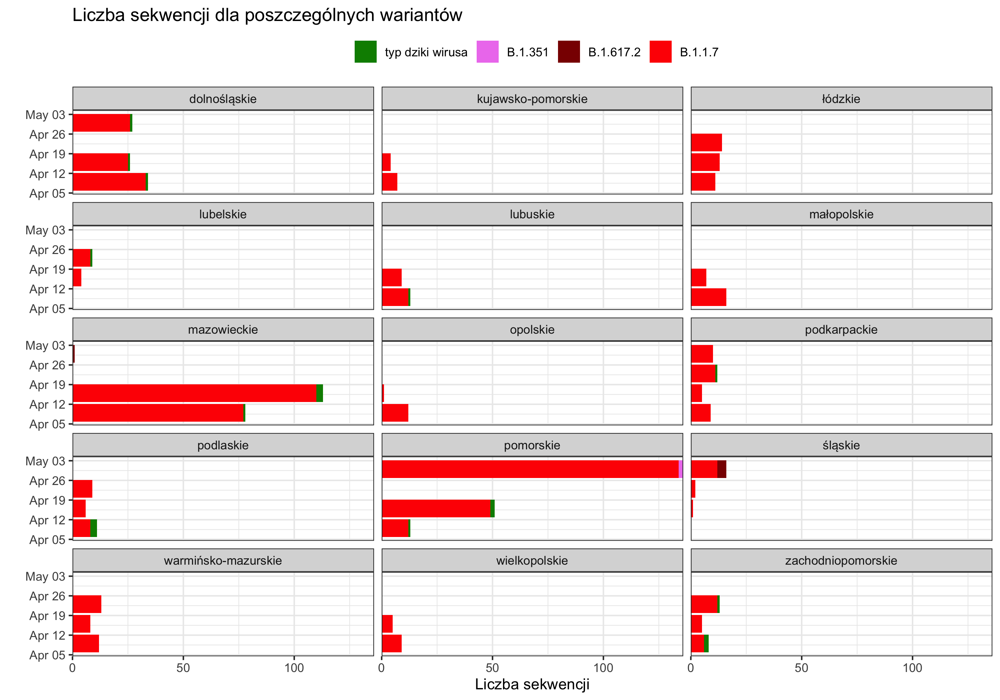
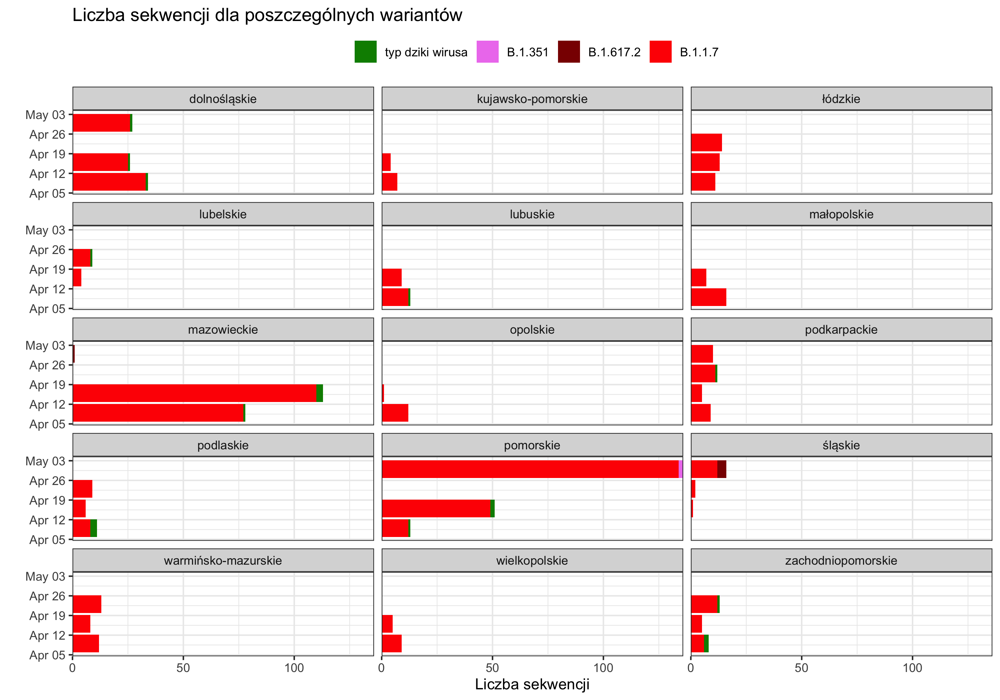

Udział poszczególnych wariantów SARS-COV-2 w województwach
Dominującym wariantem jest wariant brytyjski w każdym województwie.
 

| B.1.1.7 | B.1.351 | B.1.617.2 | typ dziki wirusa | |
|---|---|---|---|---|
| dolnośląskie | 84 | 0 | 0 | 3 |
| kujawsko-pomorskie | 11 | 0 | 0 | 0 |
| łódzkie | 38 | 0 | 0 | 0 |
| lubelskie | 12 | 0 | 0 | 1 |
| lubuskie | 21 | 0 | 0 | 1 |
| małopolskie | 23 | 0 | 0 | 0 |
| mazowieckie | 187 | 0 | 1 | 4 |
| opolskie | 13 | 0 | 0 | 0 |
| podkarpackie | 35 | 0 | 0 | 1 |
| podlaskie | 23 | 0 | 0 | 3 |
| pomorskie | 195 | 2 | 0 | 3 |
| śląskie | 15 | 0 | 4 | 0 |
| warmińsko-mazurskie | 33 | 0 | 0 | 0 |
| wielkopolskie | 14 | 0 | 0 | 0 |
| zachodniopomorskie | 23 | 0 | 0 | 3 |